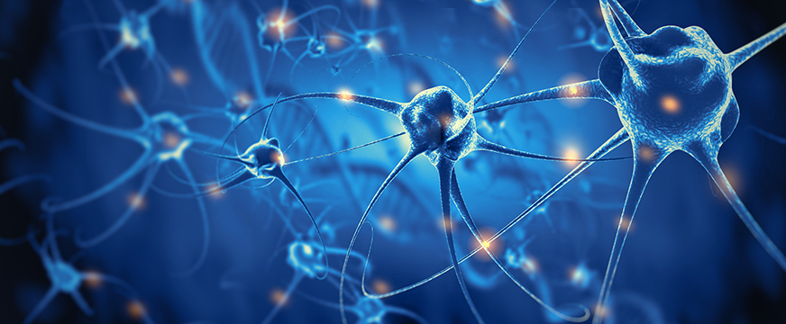

Клинический случай №1
Подзаголовок
Автор / источник :
Татаренко Алена ИгоревнаСпециализация:
МОРС ГКБ имени В.М. Буянова
Пациентка Р.
1963 г. рожденияПол: Ж
Профессия/Образ жизни: швея, продолжает работать
МРТ
Исследование
- {{ val }}
{{ listTab[store.currentTab].desc }}
{{ listTab[store.currentTab].footnote }}
Заключение

Диагноз июль 2021
ППИ-6 с 4 до 5 баллов
Клинический Основной
Рассеянный склероз с обострениями, вторично-прогрессирующее течение (G35).
Оценка по опроснику MSproDiscuss:
желтыйНазначения

2021
С ноября 2021 начат прием сипонимода, отмечает увеличение толерантности к физическим нагрузкам, уредились эпизоды неудержания мочи, «стала бодрее».
Июнь 2022
В настоящее время состояние относительно стабильное.
За прошедший период наблюдения удалось достигнуть приостановки прогрессирования. В связи с хорошей переносимостью, положительным ответом на лечение сиптонимодом, пациентке рекомендовано продолжить терапию сипонимодом
- Улучшение по SDMT на 1 балл (31-33б.б.)
- Улучшение функции верхних конечностей по тесту 9 колышков
- Субъективное уменьшение утомляемости
- Увеличение дистанции ходьбы (до 400 м, ранее - 200 м)